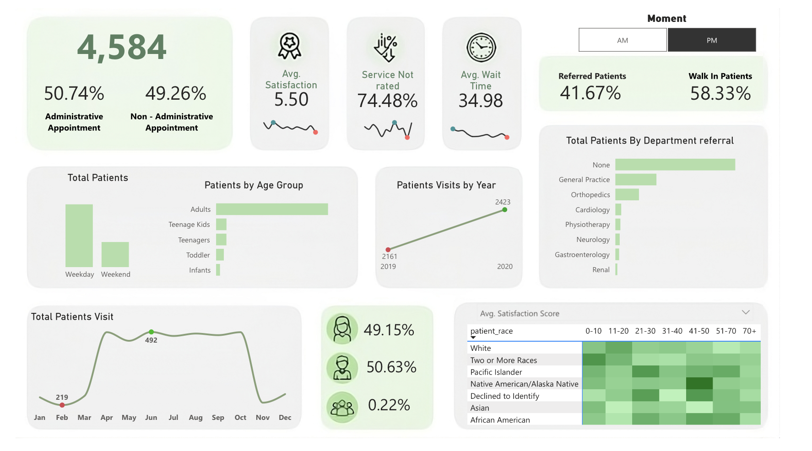

Hospital Dashboard
In today’s data-driven world, healthcare organizations are increasingly relying on data analytics to enhance patient care and operational efficiency. The dataset provided, which includes fields such as patient demographics, satisfaction scores, wait times, and referral information, offers a wealth of opportunities to extract meaningful insights.

Understanding the Dataset The dataset contains the following fields:
Calculated Fields
age bucket =
SWITCH(
TRUE(),
'patients'[patient_age]<=10, "0-10",
'patients'[patient_age]<=20, "11-20",
'patients'[patient_age]<=30, "21-30",
'patients'[patient_age]<=40, "31-40",
'patients'[patient_age]<=50, "41-50",
'patients'[patient_age]<=60, "51-70",
"70+"
)
Age_Group =
VAR _PatientAge = 'patients'[patient_age]
RETURN
if( _PatientAge<=2, "Infants",
IF(_PatientAge<=6, "Toddler",
IF(_PatientAge<= 12, "Teenage Kids",
IF(_PatientAge<= 18, "Teenagers",
"Adults"))))
% administrative schedule = DIVIDE(
COUNTROWS(
FILTER('patients', patients[patient_admin_flag]= TRUE())
),
[total_patients]
)
% Female Visit =
DIVIDE(
CALCULATE(
[total_patients],
'patients'[patient_gender] = "F"
),
[total_patients]
)
% Reffered patients =
VAR _filterpatients =
CALCULATE(
[total_patients],
'patients'[department_referral] <> "none"
)
RETURN
DIVIDE(_filterpatients,
[total_patients])
Key Insights and What They Reveal
Patient Demographics and Diversity
Analyzing the proportion of male and female patients can help tailor services to meet the needs of specific groups. For example, a higher percentage of female patients might indicate the need for specialized women’s health services.
Satisfaction Score Analysis
Tracking satisfaction scores over time reveals how well the healthcare facility is meeting patient expectations. A downward trend might indicate the need for process improvements or additional training for staff.